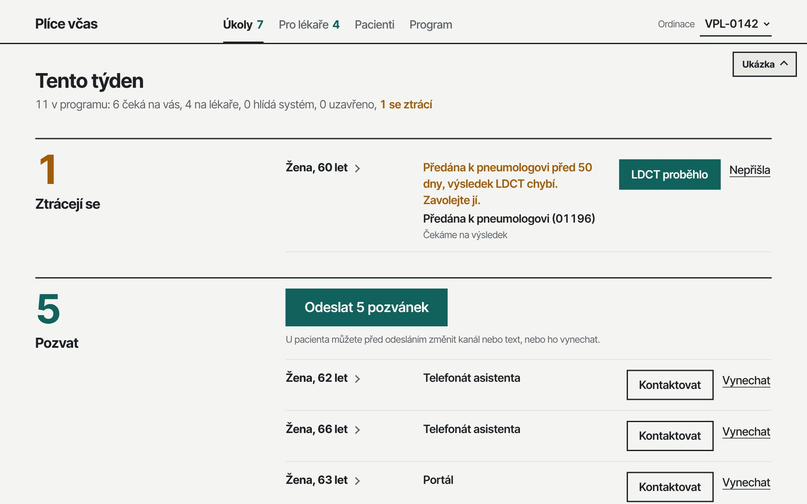
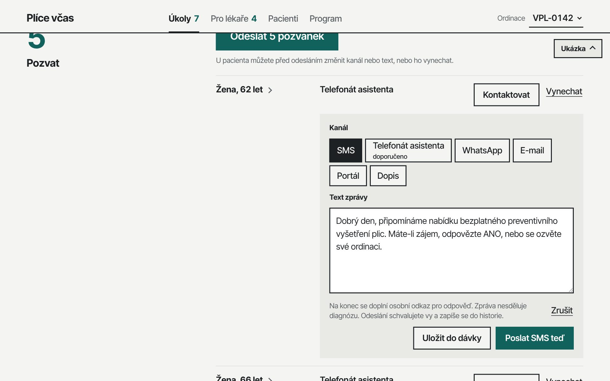
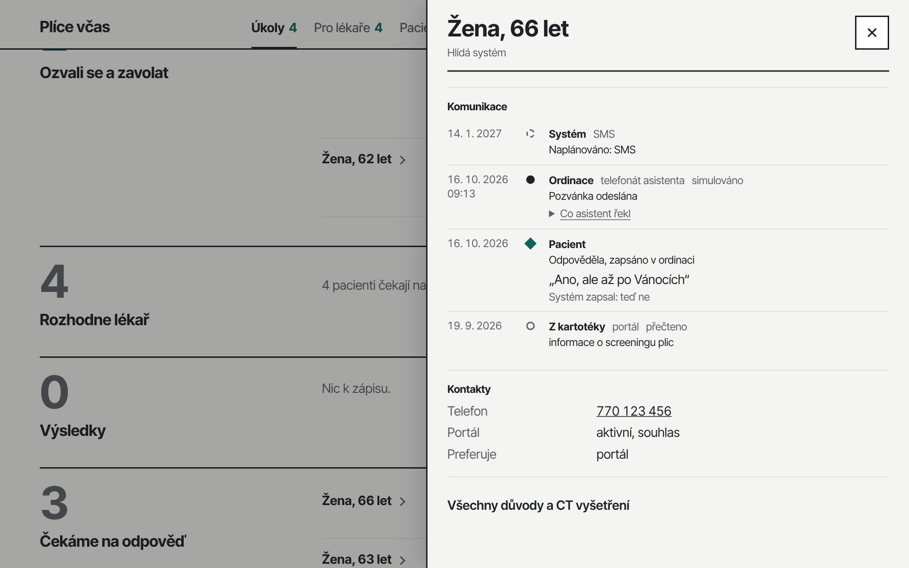
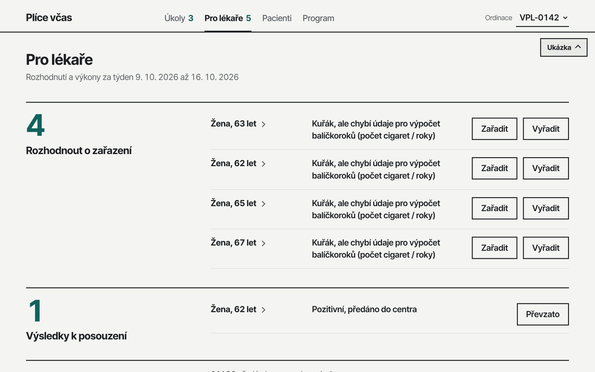
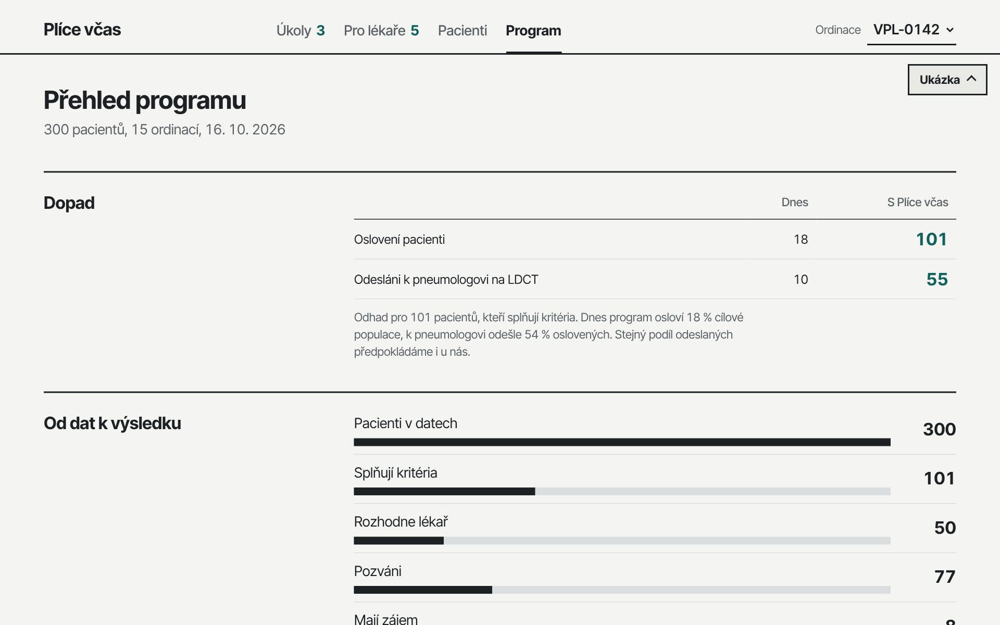

<title>Plíce včas</title>
<meta name="claude:viewport-fit-sides" content="cover">
<meta name="description" content="Plíce včas najde pacienty pro screening plic, osloví je jménem praktického lékaře a pohlídá, aby došli až k výsledku LDCT. Rakathon 2026.">
<link rel="preconnect" href="https://fonts.googleapis.com">
<link rel="preconnect" href="https://fonts.gstatic.com" crossorigin>
<link rel="stylesheet" href="https://fonts.googleapis.com/css2?family=Inter+Tight:wght@400;500;600;700;800&family=IBM+Plex+Mono:wght@400;500&display=swap">
<style>
/* Layout: the app's own Swiss grid. A 3-column aside carries the section label, a 9-column body the content; hairline rules separate sections. */
:root {
  --paper: #f4f4f2;
  --surface: #ffffff;
  --ink: #1e2124;
  --ink-2: #5c6166;
  --hair: #dcdddf;
  --accent: #11615d;
  --accent-soft: #dcebe9;
  --warn: #a15c07;
  --on-accent: #ffffff;
  --display: "Inter Tight", "Helvetica Neue", Helvetica, Arial, sans-serif;
  --body: "Inter Tight", "Helvetica Neue", Helvetica, Arial, sans-serif;
  --mono: "IBM Plex Mono", ui-monospace, "SFMono-Regular", Menlo, Consolas, monospace;
  --t-s: 0.8125rem; --t-m: 1.0625rem; --t-l: 1.375rem; --t-xl: clamp(1.75rem, 3.2vw, 2.5rem); --t-xxl: clamp(4.5rem, 14vw, 11rem);
  --max: 1200px;
}
@media (prefers-color-scheme: dark) {
  :root:not([data-theme="light"]) {
    --paper: #16181a; --surface: #1f2225; --ink: #e8e9ea; --ink-2: #a3a8ad; --hair: #2e3235;
    --accent: #4fb3ac; --accent-soft: #19302e; --warn: #e0a040; --on-accent: #0b1a19; color-scheme: dark;
  }
}
:root[data-theme="dark"] {
  --paper: #16181a; --surface: #1f2225; --ink: #e8e9ea; --ink-2: #a3a8ad; --hair: #2e3235;
  --accent: #4fb3ac; --accent-soft: #19302e; --warn: #e0a040; --on-accent: #0b1a19; color-scheme: dark;
}

* { box-sizing: border-box; }
body { background: var(--paper); color: var(--ink); font: 400 var(--t-m)/1.55 var(--body); -webkit-font-smoothing: antialiased; }
.wrap { max-width: var(--max); margin: 0 auto; padding-left: max(16px, env(safe-area-inset-left, 0px)); padding-right: max(16px, env(safe-area-inset-right, 0px)); }
h1, h2, h3 { font-family: var(--display); margin: 0; text-wrap: balance; }
p { margin: 0; }
a { color: var(--accent); text-underline-offset: 3px; }
a:focus-visible, video:focus-visible, button:focus-visible { outline: 3px solid var(--accent); outline-offset: 3px; }
.mono { font-family: var(--mono); font-size: 0.92em; }
.muted { color: var(--ink-2); }
.label { font-size: var(--t-s); font-weight: 600; letter-spacing: 0.06em; text-transform: uppercase; color: var(--ink-2); }

/* top bar */
.top { border-bottom: 2px solid var(--ink); }
.top .wrap { display: flex; flex-wrap: wrap; align-items: baseline; justify-content: space-between; gap: 8px 24px; padding-block: 18px; }
.brand { font: 700 1.125rem/1 var(--display); letter-spacing: -0.01em; }
.top nav { display: flex; flex-wrap: wrap; gap: 6px 20px; font-size: var(--t-s); }
.top nav a { color: var(--ink); text-decoration: none; }
.top nav a:hover { color: var(--accent); }

/* hero */
.hero .wrap { padding-block: 56px 48px; display: grid; gap: 40px; }
.hero h1 { font-size: var(--t-xl); font-weight: 700; letter-spacing: -0.02em; line-height: 1.12; max-width: 22ch; }
.hero .lead { font-size: var(--t-l); line-height: 1.45; max-width: 46ch; color: var(--ink-2); }
.versus { display: grid; grid-template-columns: repeat(2, minmax(0, 1fr)); gap: 0 32px; border-top: 1px solid var(--hair); padding-top: 20px; }
.versus div { display: grid; gap: 4px; min-width: 0; }
.versus b { font: 800 var(--t-xxl)/0.9 var(--display); letter-spacing: -0.045em; font-variant-numeric: tabular-nums; }
.versus .now b { color: var(--ink-2); }
.versus .us b { color: var(--accent); }
.versus span { font-size: var(--t-m); max-width: 28ch; }
.facts { display: grid; grid-template-columns: repeat(auto-fit, minmax(180px, 1fr)); gap: 20px 32px; }
.facts li { list-style: none; display: grid; gap: 2px; border-top: 1px solid var(--hair); padding-top: 12px; }
.facts b { font: 700 var(--t-l)/1.2 var(--display); font-variant-numeric: tabular-nums; }
.facts { padding: 0; margin: 0; }
.src { font-size: var(--t-s); color: var(--ink-2); }

/* sections */
.section { border-top: 2px solid var(--ink); }
.section > .wrap { display: grid; grid-template-columns: repeat(12, minmax(0, 1fr)); gap: 24px; padding-block: 40px 56px; }
.aside { grid-column: span 3; display: grid; align-content: start; gap: 6px; }
.aside h2 { font-size: var(--t-l); font-weight: 700; letter-spacing: -0.01em; line-height: 1.2; }
.body { grid-column: span 9; display: grid; gap: 28px; min-width: 0; }
.body > p, .prose { max-width: 64ch; }
@media (max-width: 760px) {
  .aside, .body { grid-column: 1 / -1; }
  .versus { grid-template-columns: 1fr; gap: 20px; }
}

/* three things */
.three { display: grid; grid-template-columns: repeat(auto-fit, minmax(220px, 1fr)); gap: 24px 32px; counter-reset: s; }
.three article { display: grid; gap: 8px; align-content: start; border-top: 1px solid var(--hair); padding-top: 14px; min-width: 0; }
.three h3 { font-size: var(--t-l); font-weight: 700; display: flex; gap: 10px; align-items: baseline; }
.three h3::before { counter-increment: s; content: counter(s); font: 500 var(--t-s)/1 var(--mono); color: var(--accent); }

/* screenshots */
figure { margin: 0; display: grid; gap: 8px; min-width: 0; }
figure img, video { display: block; width: 100%; max-width: 100%; height: auto; border: 1px solid var(--hair); background: var(--surface); }
figcaption { font-size: var(--t-s); color: var(--ink-2); max-width: 64ch; }
.shots { display: grid; grid-template-columns: repeat(2, minmax(0, 1fr)); gap: 32px 24px; }
.shots .wide { grid-column: 1 / -1; }
@media (max-width: 760px) { .shots { grid-template-columns: 1fr; } }

/* journey */
.track { overflow-x: auto; padding-bottom: 6px; }
.track ol { list-style: none; margin: 0; padding: 0; display: grid; grid-template-columns: repeat(6, minmax(118px, 1fr)); min-width: 720px; }
.track li { position: relative; display: grid; gap: 4px; align-content: start; padding: 22px 12px 0 0; border-top: 3px solid var(--ink); }
.track li::before { content: ""; position: absolute; top: -8px; left: 0; width: 13px; height: 13px; border-radius: 50%; background: var(--paper); border: 3px solid var(--ink); }
.track li.key { border-top-color: var(--accent); }
.track li.key::before { background: var(--accent); border-color: var(--accent); }
.track b { font-weight: 700; }
.track small { font-size: var(--t-s); color: var(--ink-2); line-height: 1.4; }
.code { display: inline-block; font: 500 var(--t-s)/1.3 var(--mono); padding: 2px 6px; background: var(--accent-soft); color: var(--accent); justify-self: start; }
.branches { display: grid; grid-template-columns: repeat(auto-fit, minmax(220px, 1fr)); gap: 16px 32px; margin: 0; }
.branches div { border-left: 3px solid var(--hair); padding-left: 14px; display: grid; gap: 4px; }
.branches dt { font-weight: 700; }
.branches dd { margin: 0; color: var(--ink-2); font-size: 0.95rem; }
.branches .lost { border-left-color: var(--warn); }
.branches .lost dt { color: var(--warn); }

/* channels */
.channels { display: grid; grid-template-columns: repeat(auto-fit, minmax(200px, 1fr)); gap: 0 24px; margin: 0; padding: 0; }
.channels li { list-style: none; display: grid; gap: 4px; padding: 14px 0; border-top: 1px solid var(--hair); }
.channels b { font-size: var(--t-l); font-family: var(--display); }
.ok { font: 500 var(--t-s)/1.3 var(--mono); color: var(--accent); }

/* FHIR loop */
.loop { display: grid; grid-template-columns: minmax(0, 1fr) 96px minmax(0, 1.3fr) 96px minmax(0, 1fr); align-items: stretch; gap: 0; }
.node { border: 2px solid var(--ink); background: var(--surface); padding: 16px; display: grid; gap: 8px; align-content: start; min-width: 0; }
.node.hub { border-color: var(--accent); }
.node h3 { font-size: var(--t-m); font-weight: 700; }
.node ul { margin: 0; padding: 0; list-style: none; display: grid; gap: 3px; font: 400 var(--t-s)/1.45 var(--mono); color: var(--ink-2); }
.node.future { border-style: dashed; border-color: var(--ink-2); background: transparent; }
.arrows { display: grid; align-content: center; gap: 14px; padding: 0 8px; font-size: 0.75rem; line-height: 1.3; color: var(--ink-2); text-align: center; }
.arrows span { display: grid; gap: 2px; }
.arrows i { font-style: normal; display: block; height: 2px; background: var(--ink); position: relative; }
.arrows i.r::after, .arrows i.l::after { content: ""; position: absolute; top: -4px; width: 0; height: 0; border-top: 5px solid transparent; border-bottom: 5px solid transparent; }
.arrows i.r::after { right: -1px; border-left: 8px solid var(--ink); }
.arrows i.l::after { left: -1px; border-right: 8px solid var(--ink); }
.arrows i.dash { background: repeating-linear-gradient(90deg, var(--ink-2) 0 6px, transparent 6px 10px); }
.arrows i.dash::after { border-right-color: var(--ink-2); }
@media (max-width: 860px) {
  .loop { grid-template-columns: 1fr; }
  .arrows { grid-auto-flow: column; justify-content: center; padding: 10px 0; gap: 24px; }
  .arrows i { width: 2px; height: 28px; margin: 0 auto; }
  .arrows i.r::after, .arrows i.l::after { display: none; }
  .arrows i.dash { background: repeating-linear-gradient(180deg, var(--ink-2) 0 6px, transparent 6px 10px); }
}

/* how it was built */
.log { list-style: none; margin: 0; padding: 0; display: grid; }
.log li { display: grid; grid-template-columns: 7.5rem minmax(0, 1fr); gap: 16px; padding: 10px 0; border-top: 1px solid var(--hair); }
.log time { font: 500 var(--t-s)/1.6 var(--mono); color: var(--ink-2); font-variant-numeric: tabular-nums; }
@media (max-width: 520px) { .log li { grid-template-columns: 1fr; gap: 2px; } }
.method { display: grid; grid-template-columns: repeat(auto-fit, minmax(240px, 1fr)); gap: 24px 32px; }
.method div { display: grid; gap: 6px; align-content: start; }
.method h3 { font-size: var(--t-m); font-weight: 700; }
.nums { display: flex; flex-wrap: wrap; gap: 12px 40px; margin: 0; padding: 0; list-style: none; }
.nums li { display: grid; }
.nums b { font: 700 var(--t-xl)/1 var(--display); font-variant-numeric: tabular-nums; letter-spacing: -0.02em; }
.nums span { font-size: var(--t-s); color: var(--ink-2); }

/* stack */
.stack { margin: 0; display: grid; }
.stack div { display: grid; grid-template-columns: 11rem minmax(0, 1fr); gap: 16px; padding: 12px 0; border-top: 1px solid var(--hair); }
.stack dt { font-weight: 700; }
.stack dd { margin: 0; }
.stack dd small { display: block; color: var(--ink-2); font-size: var(--t-s); margin-top: 2px; }
@media (max-width: 520px) { .stack div { grid-template-columns: 1fr; gap: 2px; } }

.next { margin: 0; padding: 0 0 0 1.2em; display: grid; gap: 10px; max-width: 64ch; }

footer { border-top: 2px solid var(--ink); }
footer .wrap { padding-block: 24px 40px; display: flex; flex-wrap: wrap; justify-content: space-between; gap: 12px 24px; font-size: var(--t-s); color: var(--ink-2); }

@media (prefers-reduced-motion: no-preference) {
  .versus .us b { animation: rise 900ms cubic-bezier(.2,.7,.2,1) both; }
  @keyframes rise { from { transform: translateY(0.12em); } to { transform: none; } }
}
</style>

<header class="top">
  <div class="wrap">
    <span class="brand">Plíce včas</span>
    <nav aria-label="Obsah">
      <a href="#co-dela">Co dělá</a>
      <a href="#ukazka">Ukázka</a>
      <a href="#cesta">Cesta pacienta</a>
      <a href="#data">FHIR a IRIS</a>
      <a href="#vznik">Jak vznikl</a>
      <a href="#stack">Technologie</a>
    </nav>
  </div>
</header>

<main>
<section class="hero" aria-labelledby="h-hero">
  <div class="wrap">
    <p class="label">Rakathon 2026 · výzva Cesta ke screeningu plic · AstraZeneca</p>
    <h1 id="h-hero">Program Prevence pro plíce funguje. Jen se k&nbsp;němu lidé nedostanou.</h1>
    <p class="lead">Plíce včas najde v datech praktického lékaře pacienty pro screening plic, osloví je jménem ordinace a pohlídá, aby došli až k&nbsp;výsledku LDCT.</p>
    <div class="versus" aria-label="Oslovení vhodní pacienti v datech výzvy">
      <div class="now"><b>18</b><span>vhodných pacientů by dnes oslovila ordinace, odhad podle celostátních 18&nbsp;%</span></div>
      <div class="us"><b>101</b><span>vhodných pacientů osloví s&nbsp;Plíce&nbsp;včas, tedy všechny</span></div>
    </div>
    <ul class="facts">
      <li><b>51&nbsp;%</b><span>nádorů zachycených screeningem je ve stadiu&nbsp;1</span></li>
      <li><b>asi 18&nbsp;%</b><span>cílové populace program za čtyři roky oslovil</span></li>
      <li><b>téměř polovina</b><span>oslovených pozvání odmítla</span></li>
      <li><b>300 pacientů, 15 ordinací</b><span>v datech výzvy, nad kterými aplikace běží</span></li>
    </ul>
  </div>
</section>

<section class="section" id="co-dela" aria-labelledby="h-co">
  <div class="wrap">
    <div class="aside"><p class="label">Produkt</p><h2 id="h-co">Co dělá</h2></div>
    <div class="body">
      <div class="three">
        <article>
          <h3>Najde</h3>
          <p>Pacienty 55 až 74 let, kuřáky a bývalé kuřáky s nejméně 20 balíčkoroky, bez CT hrudníku za posledních 30 dní. Opraví poškozené řádky a diakritiku, rozporné údaje pošle lékaři a u každého rozhodnutí uvede důvod.</p>
        </article>
        <article>
          <h3>Osloví</h3>
          <p>Jménem praktika. Sestra jednou týdně schválí dávku pozvánek, nebo pacienta kontaktuje hned: SMS, hovor hlasového asistenta, WhatsApp nebo e-mail. Kanál doporučí podle historie pacienta.</p>
        </article>
        <article>
          <h3>Pohlídá</h3>
          <p>Kdo neodpoví, dostane další kontakt podle plánu. Odpověď systém rozpozná a zařadí. Kdo se ztrácí, například předán k pneumologovi a šest týdnů bez LDCT, je nahoře v úkolech sestry.</p>
        </article>
      </div>
    </div>
  </div>
</section>

<section class="section" id="ukazka" aria-labelledby="h-ukazka">
  <div class="wrap">
    <div class="aside"><p class="label">Ukázka</p><h2 id="h-ukazka">Jak to vidí sestra a lékař</h2></div>
    <div class="body">
      <figure>
        <video controls preload="metadata" playsinline poster="img/ukoly.jpg" aria-describedby="cap-video">
          <source src="demo.mp4" type="video/mp4">
        </video>
        <figcaption id="cap-video">Záznam ukázky, 110 sekund, česky namluveno. Zvuk se spustí po kliknutí na přehrát.</figcaption>
      </figure>
      <div class="shots">
        <figure class="wide">
          
          <figcaption>Úkoly. Nahoře kdo se ztrácí a proč, pod tím pozvánky na tento týden. Sestra vidí jen to, co má udělat.</figcaption>
        </figure>
        <figure>
          
          <figcaption>Kontaktovat teď. Sestra vybere kanál, text je jménem ordinace a odejde hned.</figcaption>
        </figure>
        <figure>
          
          <figcaption>Karta pacienta. Celá komunikace na jednom místě, odpověď doslova a jak ji systém pochopil.</figcaption>
        </figure>
        <figure>
          
          <figcaption>Pro lékaře. Jen rozhodnutí o zařazení, výsledky k převzetí a kódy 01196 a 01197 k vykázání.</figcaption>
        </figure>
        <figure>
          
          <figcaption>Přehled programu. Dopad v datech výzvy a cesta od dat k výsledku.</figcaption>
        </figure>
      </div>
    </div>
  </div>
</section>

<section class="section" id="cesta" aria-labelledby="h-cesta">
  <div class="wrap">
    <div class="aside"><p class="label">Stavový automat</p><h2 id="h-cesta">Cesta pacienta</h2></div>
    <div class="body">
      <p>Každý pacient je v jednom stavu a mění ho jen povolená událost. Tabulku přechodů sdílí server i webová aplikace, takže se nemůžou rozejít. Událost, která v daném stavu nedává smysl, se zapíše, ale nic nezmění.</p>
      <div class="track" role="region" aria-label="Hlavní cesta pacienta" tabindex="0">
        <ol>
          <li><b>Nalezen</b><small>splňuje kritéria programu</small></li>
          <li><b>Pozván</b><small>SMS, hovor, WhatsApp, e-mail, další pokus podle plánu</small></li>
          <li><b>Ozval se</b><small>má zájem nebo chce zavolat</small></li>
          <li class="key"><b>Předán k pneumologovi</b><span class="code">01196</span><small>praktik vystaví žádanku</small></li>
          <li><b>LDCT</b><small>nízkodávkové CT v centru</small></li>
          <li class="key"><b>Výsledek</b><small>lékař převezme; po negativním za dva roky znovu pozvánka na kontrolní LDCT</small></li>
        </ol>
      </div>
      <dl class="branches">
        <div><dt>Teď ne</dt><dd>Nabídka se vrátí za tři měsíce. „Ano, ale až po Vánocích“ systém zapíše jako teď ne.</dd></div>
        <div><dt>Nechce</dt><dd>První odmítnutí je měkké a nabídka se zopakuje. Kód <span class="mono">01197</span> až napodruhé. STOP odhlásí vždy a hned.</dd></div>
        <div><dt>Objednal se sám</dt><dd>Pacient se může objednat přímo u pneumologa i bez doporučení praktika, pozvánka mu to řekne. Systém to zapíše a dál nepřipomíná.</dd></div>
        <div><dt>Zavolat sestře</dt><dd>Otázka nebo nejistá odpověď jde k sestře, systém sám nerozhoduje.</dd></div>
        <div class="lost"><dt>Ztrácí se</dt><dd>Předán bez LDCT po 6 týdnech, LDCT bez výsledku po 3 týdnech, odpověď bez reakce, plán kontaktů skončil.</dd></div>
      </dl>
    </div>
  </div>
</section>

<section class="section" id="kanaly" aria-labelledby="h-kanaly">
  <div class="wrap">
    <div class="aside"><p class="label">Komunikace</p><h2 id="h-kanaly">Čtyři kanály naostro</h2></div>
    <div class="body">
      <ul class="channels">
        <li><b>SMS</b><span>Pacient odpoví ANO, systém pošle potvrzení a přesune ho do Ozvali se.</span><span class="ok">ověřeno na skutečném telefonu</span></li>
        <li><b>Hlasový asistent</b><span>Český hlas, mluví jen schválenými větami, rozumí odpovědi hlasem i klávesou.</span><span class="ok">ověřeno na skutečném telefonu</span></li>
        <li><b>WhatsApp</b><span>Stejná pozvánka, odpověď textem se zapíše ke správnému pacientovi.</span><span class="ok">ověřeno na skutečném telefonu</span></li>
        <li><b>E-mail</b><span>Delší text a osobní odkaz, přes který pacient odpoví jedním klikem.</span><span class="ok">ověřeno do skutečné schránky</span></li>
      </ul>
      <p class="prose">Odpověď pacienta rozpozná sada pravidel a volitelně jazykový model: má zájem, už je objednaný, chce zavolat, teď ne, nechce, ptá se. Odhlášení vždy rozhodují pravidla. O zařazení pacienta ani o odeslání pozvánky AI nerozhoduje, to dělají pravidla programu a člověk.</p>
    </div>
  </div>
</section>

<section class="section" id="data" aria-labelledby="h-data">
  <div class="wrap">
    <div class="aside"><p class="label">InterSystems</p><h2 id="h-data">FHIR a IRIS oběma směry</h2></div>
    <div class="body">
      <div class="loop" role="img" aria-label="Data ordinace se nahrají do InterSystems IRIS jako FHIR R4, Plíce včas je čte zpět a každý krok zapisuje zpět. Výsledky z pneumologického centra jsou další krok.">
        <div class="node">
          <h3>Systém praktika</h3>
          <ul><li>kartotéka (NIS)</li><li>CSV a XLSX z výzvy</li><li>historie kontaktů</li></ul>
        </div>
        <div class="arrows" aria-hidden="true"><span><i class="r"></i>nahrání</span></div>
        <div class="node hub">
          <h3>InterSystems IRIS for Health</h3>
          <ul><li>FHIR R4</li><li>Patient</li><li>Observation: kouření, balíčkoroky</li><li>ImagingStudy: CT</li><li>Communication: pozvánky, odpovědi</li><li>Task: stav pacienta</li></ul>
        </div>
        <div class="arrows" aria-hidden="true"><span><i class="r"></i>čtení</span><span><i class="l"></i>zápis kroků</span></div>
        <div class="node">
          <h3>Plíce včas</h3>
          <ul><li>stejný engine nad daty z FHIR</li><li>každý krok zpět jako Communication a Task</li></ul>
        </div>
      </div>
      <p class="prose">Původní sloupce z kartotéky zůstávají v FHIR jako rozšíření, takže aplikace pacienty z IRIS načte zpět a vyhodnotí stejně jako z původních souborů. Ověřeno na všech 300 pacientech, do IRIS jsme nahráli 1 507 záznamů. Díky FHIR aplikace nezávisí na jednom systému praktika.</p>
      <div class="loop" role="img" aria-label="Další krok: pneumologické centrum vrací výsledek LDCT jako DiagnosticReport">
        <div class="node future"><h3>Pneumologické centrum</h3><ul><li>další krok</li></ul></div>
        <div class="arrows" aria-hidden="true"><span><i class="l dash"></i>výsledek LDCT</span></div>
        <div class="node future"><h3>DiagnosticReport, ServiceRequest</h3><ul><li>žádanka tam, výsledek zpět</li><li>LDCT a výsledek bez ruční značky</li></ul></div>
      </div>
    </div>
  </div>
</section>

<section class="section" id="vznik" aria-labelledby="h-vznik">
  <div class="wrap">
    <div class="aside"><p class="label">Proces</p><h2 id="h-vznik">Jak vznikl</h2></div>
    <div class="body">
      <ul class="nums">
        <li><b>~20 h</b><span>od prvního commitu do odevzdání</span></li>
        <li><b>62</b><span>commitů</span></li>
        <li><b>109</b><span>automatických testů</span></li>
        <li><b>30</b><span>předávacích poznámek mezi relacemi</span></li>
      </ul>
      <div class="method">
        <div>
          <h3>Dvě relace Claude Code</h3>
          <p>Jedna v cloudu psala engine, rozhraní, testy a video. Druhá na serveru nasazovala, zapojila Twilio, ElevenLabs, Gmail a IRIS a zkoušela vše naostro. Domlouvaly se poznámkami ve složce <span class="mono">bridge/</span> v gitu, kapitán týmu rozhodoval.</p>
        </div>
        <div>
          <h3>Konzilia agentů</h3>
          <p>Rozhraní prošlo několika koly auditu, kde skupina agentů hrála sestru, lékaře a pacienta a hledala slepé uličky. Našla například měkké odmítnutí vykázané jako 01197, rozporné počty a mužský rod u pacientek.</p>
        </div>
        <div>
          <h3>Mentoři</h3>
          <p>Pravidla programu potvrdila garantka výzvy. Od mentora výzvy přišel požadavek na jednoduchost pro praktiky, odtud samostatná obrazovka pro lékaře. S mentorem InterSystems jsme ladili zápis zpět do IRIS.</p>
        </div>
      </div>
      <ol class="log" aria-label="Průběh podle commitů">
        <li><time>pá 17:36</time><span>Engine nad daty výzvy, rozhraní pro sestru, Twilio, plán kontaktů, export do FHIR</span></li>
        <li><time>pá 18:04</time><span>Švýcarský redesign: úkoly místo tabulek, jedna barva, méně textu</span></li>
        <li><time>pá 19:57</time><span>Český hlas hovoru přes ElevenLabs</span></li>
        <li><time>pá 20:05</time><span>Druhá relace na serveru, předávání přes <span class="mono">bridge/</span></span></li>
        <li><time>pá 21:54</time><span>První SMS naostro, odpověď a potvrzení</span></li>
        <li><time>pá 22:50</time><span>Kontaktovat teď: SMS, hovor, WhatsApp, e-mail</span></li>
        <li><time>pá 23:06</time><span>Stavový automat pro celou cestu pacienta</span></li>
        <li><time>pá 23:44</time><span>Komunikace s pacientem na jednom místě</span></li>
        <li><time>pá 23:57</time><span>IRIS oběma směry, e-mail přes Gmail</span></li>
        <li><time>so 03:30</time><span>Obrazovka pro lékaře, opravy z auditu</span></li>
        <li><time>so 04:06</time><span>Hlasový agent ElevenLabs místo pevného scénáře</span></li>
        <li><time>so 05:05</time><span>Karta pacienta, video s českým komentářem</span></li>
      </ol>
    </div>
  </div>
</section>

<section class="section" id="stack" aria-labelledby="h-stack">
  <div class="wrap">
    <div class="aside"><p class="label">Technologie</p><h2 id="h-stack">Na čem běží</h2></div>
    <div class="body">
      <dl class="stack">
        <div><dt>Engine</dt><dd>Python 3, pravidla programu, oprava dat<small>CSV i XLSX, rozbité řádky, diakritika; konfigurovatelné věk, balíčkoroky, okno CT</small></dd></div>
        <div><dt>Server</dt><dd>FastAPI, Uvicorn<small>stavový automat jako JSON tabulka sdílená s webem, webhooky odpovědí, osobní odkaz pro pacienta</small></dd></div>
        <div><dt>Web</dt><dd>ES moduly bez frameworku, vlastní CSS tokeny<small>písmo Inter Tight, světlý i tmavý režim, telefon i počítač</small></dd></div>
        <div><dt>Kanály</dt><dd>Twilio SMS, Voice a WhatsApp; Gmail SMTP<small>stav doručení u každé zprávy</small></dd></div>
        <div><dt>Hlas</dt><dd>ElevenLabs<small>český hlas a konverzační agent, Twilio jako operátor</small></dd></div>
        <div><dt>AI</dt><dd>Jazykový model jen pro rozpoznání odpovědí<small>volitelně Claude, OpenAI nebo Azure; bez modelu fungují pravidla</small></dd></div>
        <div><dt>Data</dt><dd>HL7 FHIR R4, InterSystems IRIS for Health<small>Patient, Observation, ImagingStudy, Communication, Task</small></dd></div>
        <div><dt>Provoz</dt><dd>Docker Compose na VPS, Cloudflare Tunnel<small>přihlášení heslem, otevřené jen webhooky a odkaz pro pacienta</small></dd></div>
        <div><dt>Kvalita</dt><dd>pytest, Playwright, ffmpeg<small>109 testů včetně kontroly stavového automatu a cesty přes FHIR tam a zpět</small></dd></div>
        <div><dt>Vývoj</dt><dd>Claude Code, GitHub<small>dvě relace, předávací poznámky v repozitáři</small></dd></div>
      </dl>
    </div>
  </div>
</section>

<section class="section" id="dal" aria-labelledby="h-dal">
  <div class="wrap">
    <div class="aside"><p class="label">Další krok</p><h2 id="h-dal">Co dál</h2></div>
    <div class="body">
      <ol class="next">
        <li>Výsledek LDCT zpět z centra přes FHIR, aby sestra nemusela nic značit ručně a bylo vidět, kdo k vyšetření opravdu došel. Od 1. 7. 2027, až to praktikům umožní pravidla, i předvyplněná žádanka z údajů, které už máme.</li>
        <li>Pravidla programu od roku 2027 jedním přepínačem v konfiguraci.</li>
        <li>Napojení na další systémy praktiků přes FHIR a pilot v několika ordinacích.</li>
      </ol>
    </div>
  </div>
</section>
</main>

<footer>
  <div class="wrap">
    <span>Plíce včas · Rakathon 2026 · data výzvy jsou syntetická, v ukázce bez skutečných pacientů</span>
    <a href="https://github.com/artigrib/rakathon2026">Zdrojový kód na GitHubu</a>
  </div>
</footer>
